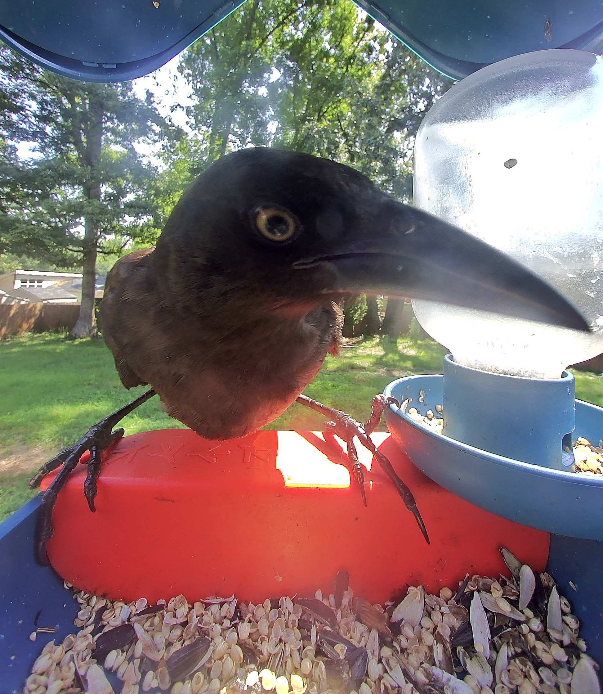

Exposing this season's most eligible bachelors of the bird world.
A Strange Arrival...

A suspicious long-beaked stranger arrived in the early afternoon. While this author is unsure of his specification or origin, we can note his long claws, glimmering eye, and significant beak, capable of scooping up the majority of seeds in the tray. We would do well to monitor the situation and perhaps request the assistance of Prince Blue, our only gentleman of a similar size to confront the interloper, but only if necessary.
One Mr. Orange has once again been spotted at the tray for a fifth helping of seeds. This author would like to remind him that greed should be an unattractive trait to the lady birds, but this author is unsure if that is actually true, and perhaps the ladies would also like extra helpings of seeds.
After much deliberation, this author declares Viscount Augustus to be the most eligible bachelor of the season. With a striking pattern, a flashy flight style, and an eye for the sweetest seeds, the Viscount is a stunning choice. His only flaw is his casual attitude concerning cats in the neighborhood, which is a potential risk to his future mate... or should we say future widow?